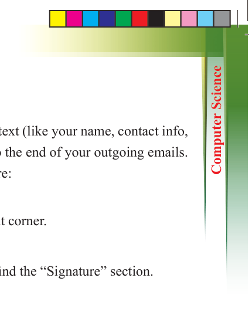
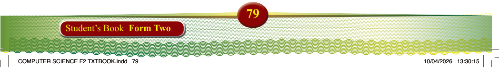
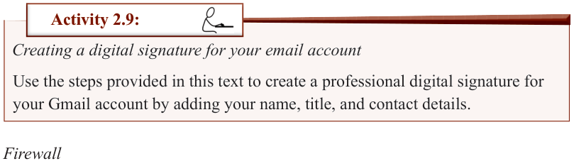

79
Student’s Book Form Two
Creating a standard email signature in Gmail
A standard email signature in Gmail is a block of text (like your name, contact info, or a favourite quote) that’s automatically added to the end of your outgoing emails.
The following are steps to create a digital signature:
(i)
Go to gmail.com and log in.
(ii) Click the “Settings” gear icon in the top right corner.
(iii) Click “See all settings.”
(iv) In the “General” tab, scroll down until you find the “Signature” section.
(v) Create or edit a signature:
•
If you do not have a signature yet, click “+ Create new” and give it a name.
•
In the text box, type the text you want in your signature.
•
You can format the text (bold, italics, font, colour) using the formatting options
above the text box. You can also add an image.
(vi) Scroll to the bottom of the page and click “Save Changes.”

Activity 2.9:
Creating a digital signature for your email account
Use the steps provided in this text to create a professional digital signature for your Gmail account by adding your name, title, and contact details.
Firewall
A firewall, as shown in Figure 2.4, is an important security tool that helps protect your
computer network from harmful attacks by blocking unwanted traffic and controlling
what comes in and out of your network. It works like a barrier between your device
and the Internet, stopping hackers, viruses, and other threats from accessing your
personal information or damaging your device. Firewalls can be either hardware
(a physical device) or software (installed on your computer). Having a firewall is
essential because it adds an extra layer of protection, helping keep your data safe and
your devices secure from cyber threats.